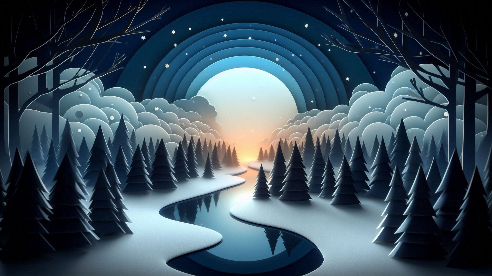
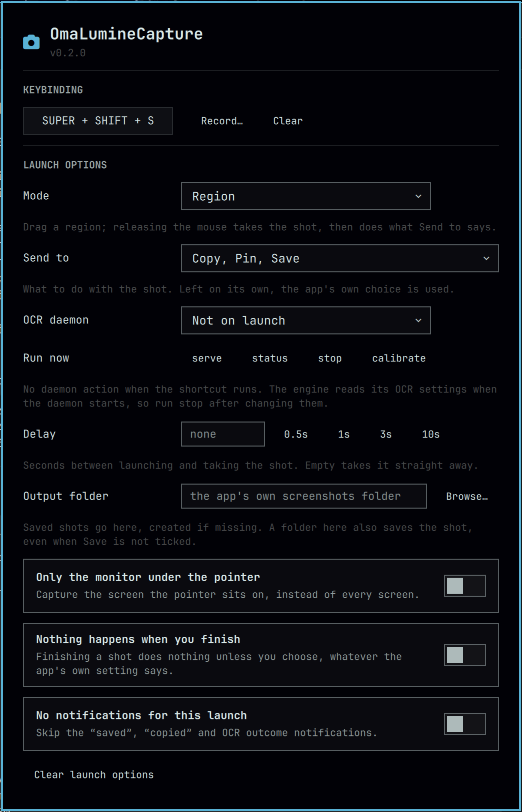

Record any chord in the panel. It is written to bindings.lua with conflict detection, and stays in sync with the widget.
Region, active window, full screen, region OCR, or leave it to the app. The panel previews what the shortcut will do.
Choose what happens when you finish the shot: clipboard, pin on screen, folder, stdout. Or nothing at all.
Serve, stop, calibrate, check status — from the panel. It tells you when the daemon has to be restarted to pick up changes.
The app's overlay colours follow the Omarchy theme, so the selection matches the bar. Colours, not wallpaper.

